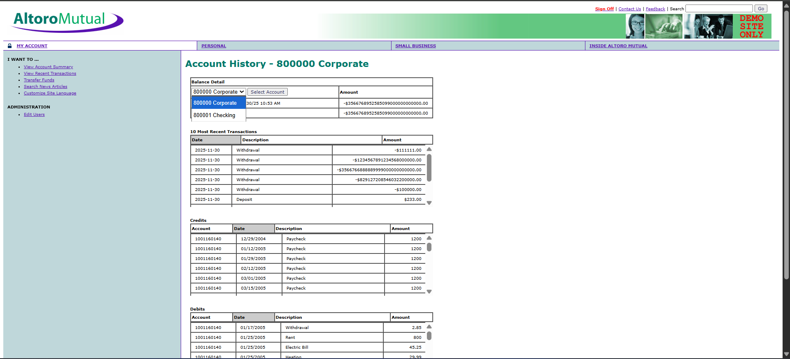
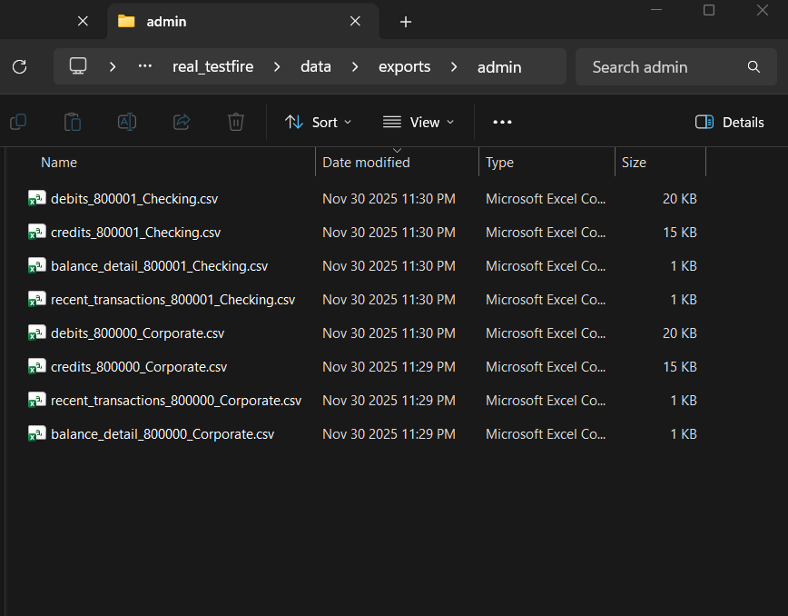

Altoro Mutual Bank - http://demo.testfire.net/login.jsp
Website gốc:

Trang demo ngân hàng Altoro Mutual với giao diện và chức năng cơ bản
Tổng quan dự án
Dự án automation testing toàn diện cho website demo ngân hàng Altoro Mutual (demo.testfire.net), thực hiện kiểm tra bảo mật, thu thập dữ liệu và đánh giá lỗ hổng bảo mật một cách tự động.
20
Credential Tests
8
Security Tests
4
Data Categories
16
CSV Exports
Tính năng chính
# Các tính năng chính của hệ thống
features = {
"Security Testing": [
"XSS Vulnerability Detection",
"SQL Injection Testing",
"CSRF Protection Check",
"Session Security Analysis"
],
"Data Scraping": [
"Balance Detail Extraction",
"Recent Transactions Export",
"Credits/Debits Analysis",
"Multi-Account Support"
],
"Automation": [
"Automated Login Testing",
"Credential Brute Force",
"Video Recording",
"CSV Export Generation"
],
"Reporting": [
"Detailed Security Reports",
"User-specific Data Export",
"Comprehensive Audit Logs",
"Error Tracking"
]
}Main Audit Script (main_audit.py)
from playwright.sync_api import sync_playwright
from data.credentials import CREDENTIALS_LIST
from pages.login_page import LoginPage
from pages.account_page import AccountPage
from pages.security_page import SecurityPage
def run_security_audit():
with sync_playwright() as p:
# Khởi tạo browser với video recording
browser = p.chromium.launch(headless=False, slow_mo=500)
context = browser.new_context(record_video_dir="data/videos/")
page = context.new_page()
login_pg = LoginPage(page)
account_pg = AccountPage(page)
security_pg = SecurityPage(page)
# Test tất cả credential pairs
for username, password in CREDENTIALS_LIST:
print(f"\n>>> Thử đăng nhập với: {username} / {password}")
login_pg.navigate(login_pg.URL)
login_pg.login(username, password)
if login_pg.is_logged_in():
print(f"[SUCCESS] Đăng nhập thành công: {username}")
# Thu thập dữ liệu từ tất cả accounts
account_pg.scrape_all_data(username)
# Chạy security scan toàn diện
security_pg.run_comprehensive_security_scan()
page.click("text=Sign Off")
else:
error = login_pg.is_login_failed()
print(f"[FAIL] Đăng nhập thất bại: {error}")
browser.close()Security Testing Module (security_page.py)
class SecurityPage(BasePage):
"""Comprehensive Security Testing Suite"""
def run_comprehensive_security_scan(self):
"""Thực hiện kiểm tra bảo mật toàn diện"""
# XSS Vulnerability Tests
xss_payloads = [
"<script>alert('XSS')</script>",
"javascript:alert('XSS')",
"<img src=x onerror=alert('XSS')>",
"';alert('XSS');//"
]
# SQL Injection Tests
sql_payloads = [
"' OR '1'='1",
"'; DROP TABLE users; --",
"' UNION SELECT * FROM users --"
]
for payload in xss_payloads:
self.check_search_vulnerability(payload)
for payload in sql_payloads:
self.check_sql_injection(payload)
# Additional security checks
self.check_csrf_protection()
self.check_session_security()Data Scraping & Export (account_page.py)
class AccountPage(BasePage):
"""Automated Data Extraction & CSV Export"""
def scrape_all_data(self, username):
"""Thu thập toàn bộ dữ liệu tài khoản"""
# Tạo folder theo username
user_folder = f"data/exports/{username}"
os.makedirs(user_folder, exist_ok=True)
# Lấy danh sách tất cả accounts
accounts = self.get_available_accounts()
for account in accounts:
if self.select_account_and_go(account["value"]):
# Thu thập 4 loại dữ liệu chính
self.scrape_balance_detail(username, account["text"], user_folder)
self.scrape_recent_transactions(username, account["text"], user_folder)
self.scrape_credits(username, account["text"], user_folder)
self.scrape_debits(username, account["text"], user_folder)
def save_csv_data(self, filename, headers, data):
"""Xuất dữ liệu ra CSV với encoding UTF-8"""
with open(filename, mode='w', newline='', encoding='utf-8') as f:
writer = csv.writer(f)
writer.writerow(headers)
writer.writerows(data)Kết quả thu được

Video Ghi Lại Quá Trình Tự Động
Video ghi lại toàn bộ quá trình: tự động đăng nhập, kiểm tra lỗ hổng bảo mật và trích xuất dữ liệu.
2
Valid Accounts Found
18
Failed Login Attempts
Multiple
Vulnerabilities Found
Full
Video Evidence
Valid Credentials Discovered:
admin / admin- Administrator account với full accessjsmith / demo1234- User account với multiple banking accounts
Security Vulnerabilities Identified:
- Weak authentication (no account lockout)
- Potential XSS vulnerabilities in search functionality
- Missing CSRF protection on critical forms
- Inadequate session security configurations
Công nghệ sử dụng
Technical Skills
Test Automation
Automation using Playwright
Security Testing
Vulnerability assessment, penetration testing và security audit techniques
Python Programming
Selenium, BeautifulSoup, Pandas, Requests
Web Scraping
Data extraction, Browser automation, API integration